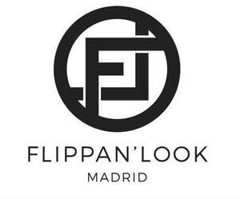

Trade Mark Journal No.2026/012 20 March 2026
UK00004338962 11 February 2026 (9,10,35)

- Class 9
- Optical apparatus and instruments; Optical electronic components; Optical devices, enhancers and correctors; Lasers; Optical enhancers; Lorgnettes [opera glasses]; Lorgnette frames.
- Class 10
- Containers for contact lenses; Frames for spectacles and sunglasses; Chains for spectacles and for sunglasses; Cases for spectacles and sunglasses; Spectacle holders; Spectacle lenses; Eyewear cases; Glasses, sunglasses and contact lenses; Ophthalmic lenses; Eyewear pouches; Spectacle cords; Spectacle lenses; Spectacle temples; Spectacle holders; Spectacle straps; Spectacle frames.
- Class 35
- Advertising; Business management; Business administration; Retail, wholesale, mail order and electronic retail services, including sales via global computer networks, all in connection with the sale of optical apparatus and instruments, Lorgnettes, spectacles and sun glasses, Eyeglass cords, Eye glass and spectacle frames, Spectacle chains, Eyeglass cases; Retail, wholesale, mail order and electronic retail services, including sales via global computer networks, all in connection with the sale of Handbags, Carriers, leather backpacks, leather belts, leather for shoes, Animal skins, hides, Luggage, Wallets, Umbrellas, Bands of leather, Walking sticks, Articles of jewellery and imitation jewellery, Precious stones, Watches, Perfumes and Parts of clothing, footwear and headgear; Import services and Export services in relation to optical apparatus and instruments, spectacles and sun glasses; Providing of assistance (business) in the operation of franchises relating to the sale of optical apparatus and instruments, Provision of assistance [business] in the operation of franchises relating to marketing in relation to Eyeglasses, sunglasses; Advice in the running of establishments as marketing franchises in relation to optical apparatus and instruments, spectacles and sun glasses.
FLIPPAN LOOK S.L.
Representative: The Trade Marks Bureau